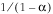
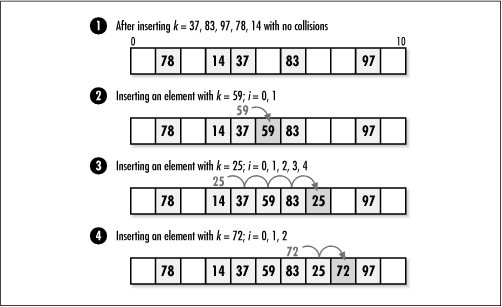
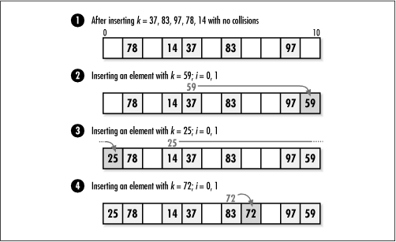

8.5 Description of Open-Addressed
Hash Tables
In a
chained hash table, elements reside in buckets extending from
each position. In an open-addressed hash table, on the other
hand, all elements reside in the table itself. This may be
important for some applications that rely on the table being a
fixed size. Without a way to extend the number of elements at
each position, however, an open-addressed hash table needs
another way to resolve collisions.
8.5.1 Collision Resolution
Whereas chained
hash tables have an inherent means of resolving collisions,
open-addressed hash tables must handle them in a different
way. The way to resolve collisions in an open-addressed hash
table is to probe the table. To insert an element, for example, we
probe positions until we find an unoccupied one, and insert
the element there. To remove or look up an element, we probe
positions until the element is located or until we encounter
an unoccupied position. If we encounter an unoccupied position
before finding the element, or if we end up traversing all of
the positions, the element is not in the table.
Of course, the
goal is to minimize how many probes we have to perform.
Exactly how many positions we end up probing depends primarily
on two things: the load factor of the hash table and the
degree to which elements are distributed uniformly. Recall
that the load factor of a hash table
is a = n/m,
where n is the number of
elements and m is the number of
positions into which the elements may be hashed. Notice that
since an open-addressed hash table cannot contain more
elements than the number of positions in the table (n > m), its load factor is always less
than or equal to 1. This makes sense, since no position can
ever contain more than one element.
Assuming uniform hashing, the number of positions we can expect
to probe in an open-addressed hash table is:

For an open-addressed hash table that is half
full (whose load factor is 0.5), for example, the number of
positions we can expect to probe is 1/(1 - 0.5) = 2. Table
8.1 illustrates how dramatically the expected number of
probes increases as the load factor of an open-addressed hash
table approaches 1 (or 100%), at which point the table is
completely full. In a particularly time-sensitive application,
it may be advantageous to increase the size of the hash table
to allow extra space for probing.
Table 8.1. Expected Probes as a
Result of Load Factor, Assuming Uniform Hashing
|
< 50 |
< 1 / (1 - 0.50) = 2 |
|
80 |
1 / (1 - 0.80) = 5 |
|
90 |
1 / (1 - 0.90) = 10 |
|
95 |
1 / (1 - 0.95) =
20 |
How close we come to the figures presented in
Table
8.1 depends on how closely we approximate uniform hashing.
Just as in a chained hash table, this depends on how well we
select our hash function. In an open-addressed hash table,
however, this also depends on how we probe subsequent
positions in the table when collisions occur. Generally, a
hash function for probing positions in an open-addressed hash
table is defined by:
h(k,i) = x
where k is a
key, i is the number of times
the table has been probed thus far, and x is the resulting hash coding.
Typically, h makes use of one
or more auxiliary hash
functions selected for the same properties as presented
for chained hash tables. However, for
an open-addressed hash table, h
must possess an additional property: as i increases from to m - 1, where m is the number of positions in the
hash table, all positions in the table must be visited before
any position is visited twice; otherwise, not all positions
will be probed.
8.5.1.1 Linear probing
One simple approach to probing an
open-addressed hash table is to probe successive positions in
the table. Formally stated, if we let i go between and m - 1, where m is the number of positions in the
table, a hash function for linear probing is defined as:
h(k,i) =
(h'(k)+i) mod m
The function h' is an auxiliary hash function,
which is selected like any hash function; that is, so that
elements are distributed in a uniform and random manner. For
example, we might choose to use the division method of hashing
and let h' (k) = k
mod m. In this case, if we hash
an element with key k = 2998
into a table of size m = 1000,
the hash codings produced are (998 + 0) mod 1000 = 998 when
i = 0, (998 + 1) mod 1000 = 999
when i = 1, (998 + 2) mod 1000
= when i = 2, and so on.
Therefore, to insert an element with key k = 2998, we would look for an
unoccupied position first at position 998, then 999, then 0,
and so on.
The advantage of linear probing is that it is
simple and there are no constraints on m to ensure that all positions will
eventually be probed. Unfortunately, linear probing does not
approximate uniform hashing very well. In particular, linear
probing suffers from a phenomenon known as primary clustering, in which large chains of occupied
positions begin to develop as the table becomes more and more
full. This results in excessive probing (see Figure
8.2).

8.5.1.2 Double hashing
One of the most effective approaches for
probing an open-addressed hash table
focuses on adding the hash codings of two auxiliary hash
functions. Formally stated, if we let i go between and m - 1, where m is the number of positions in the
table, a hash function for double hashing is defined as:
h(k,i) =
(h1(k)+ih2(k)) mod m
The functions h1 and h2 are auxiliary hash
functions, which are selected like any hash function: so that
elements are distributed in a uniform and random manner.
However, in order to ensure that all positions in the table
are visited before any position is visited twice, we must
adhere to one of the following procedures: we must select
m to be a power of 2 and make
h2 always return an
odd value, or we must make m
prime and design h2
so that it always returns a positive integer less than m.
Typically, we let h1 (k) = k
mod m and h2 (k) =
1 + (k mod m' ), where m' is slightly less than m, say, m - 1 or m - 2. Using this approach, for
example, if the hash table contains m = 1699 positions (a prime number)
and we hash the key k = 15,385,
the positions probed are (94 + (0)(113)) mod 1699 = 94 when
i = 0, and every 113th position
after this as i increases.
The advantage of double hashing is that it is
one of the best forms of probing, producing a good
distribution of elements throughout a hash table (see Figure
8.3). The disadvantage is that m is constrained in order to ensure
that all positions in the table will be visited in a series of
probes before any position is probed twice.
 |